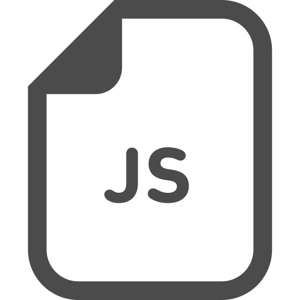

About
Profile
𠮷田 琢人
2001年10月生まれ、2020年からプログラムを学び始めました。 2022年に初めてのグループ制作にて自分の努力不足を痛感し、それをきっかけに、技術力のある方々が日々行っている事を真似しようと決意。 現在は、さまざまなプロジェクトに取り組み、技術やツールを学びながら、自分のスキルを向上させています。 プログラムに対する情熱と向上心を持ちながら、チームでの協力やコミュニケーション能力、ユーザーに配慮したシステム作りも大切にしています。 これからも挑戦し成長し続けることを心掛け、どんな困難にも立ち向かい、新しい価値を生み出すプログラマーとして活躍していくことが目標です。
I am a web developer with experience in front-end development and a passion for creating and user-friendly websites.
Strength
協調性
チームメンバーと円滑なコミュニケーションを大切にし、意見を尊重しながら最良の解決策を見つけることを努めます。困難な状況でも冷静で柔軟な判断を持ち、全員が満足する妥協点を見つけます。
集中力
何事にも取り組める集中力を持っており、騒がしい環境でも長時間目標に向かって集中して取り組むことができます。 集中しすぎてしまう場合がある為、トイレ休憩など軽い息抜きを取るように心がけています。
努力
グループワークを通じて能力不足を実感することが出来ました。これを成長の機会と捉え、技術力のあるクラスメイトから学ぶ意識を常に持ち、技術力を着実に高めることができました。
Think
Web業界は、未だに新たな技術やビジネスモデルが登場する、大きな可能性を秘めた業界だと考えています。 実際に日本におけるインターネット広告費が雑誌・新聞・テレビを超えている事からも、企業がインターネットに対して期待している状況です。
最近では、Webを単なる広告としてではなく、総合的なマーケティングツールとして活用する動きが強まっており、Webの技術・ビジネスモデルの進歩は、限られた層の人たちだけでなく、社会に対しても大きな影響力を持っていると考えられます。 この中でフロントエンドエンジニアは、技術とユーザーを結ぶインターフェースや表現の提供者であり、ユーザーに最も近い位置から直接価値を提供する立場にあり、社会に対して影響を与えることが出来ると思います。
常に技術を学び、Webを通じて新しい価値を提供することにより、クライアントやユーザーだけでなく、社会の発展にも貢献できると考えています。 私は、ユーザビリティを考慮したサイトと新しい価値を提供し、社会の発展に貢献するため、常に精進していきたいです。
Skills
-

HTML5/CSS3
4年ほど勉強しています。レスポンシブデザインや動きを付ける記述が出来ます。使用しているエディターはVisualStudioCodeです。
-

JavaScript
3年ほど勉強しています。部分的に動かすような基本的なコードを記述できます。
-
React
勉強してから1年目に入り基本的なコードを書くことができるようになりました。今一番勉強している言語です。
-
Next.js
勉強してから5ヶ月目に入りました。Reactの次に勉強している言語です。
-

Kotlin
勉強してから6ヶ月目に入りました。基本的なコードを書くことができます。
-
ORACLE
グループ制作時にWebサーバ・DBサーバを制作したことがあり、基本的な操作を出来ます。
Touls
-
Figma
使用するようになってから3年目になりました。主にワイヤーフレームからモックアップまでの作成を行っており、基本的な操作は問題なく行えます。
-
scrapbox
使用するようになってから3年目になりました。基本設計・詳細設計、DB設計・画面設計、ER図、命名規則、コーディング規約、各メンバの役割、進捗状況などの情報共有に活用しています。基本的な操作は問題なく行えます。
-
GitHub
使用するようになってから3ヶ月目になりました。基礎的な操作を扱るようになりました。 基本的な機能を扱うことができるよう勉強に励んでいます。
-
docker
卒業研究の開発に使用しています、基礎的な操作を扱えるようになりました、環境構築が出来ることを目標に勉強しています。